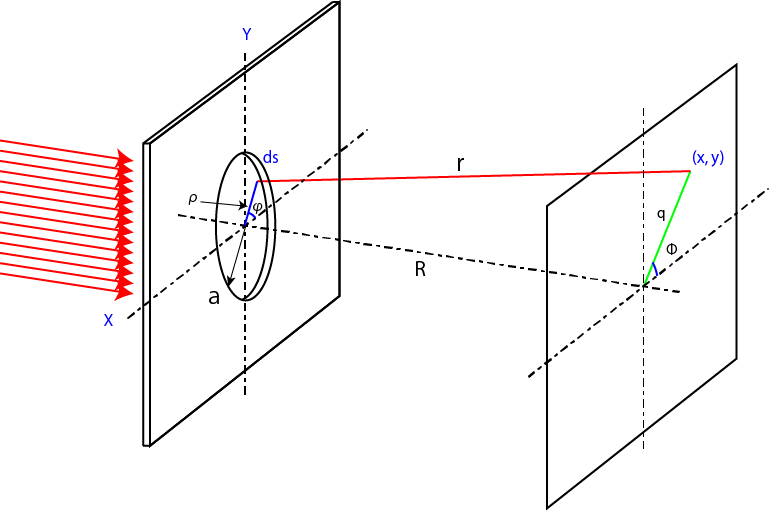
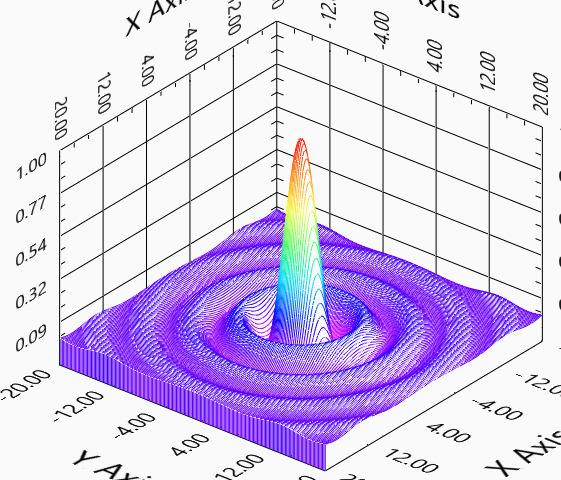

円形開口からの回折-22
円形開口
開口部が半径aの円の場合を考えましょう．

この場合はちょっと複雑ですが極座標に変換してに計算すればいいのです．
\(\Large X = \rho \ cos \varphi, Y = \rho \ sin \varphi \)
\(\Large x = q \ cos \phi, Y = q \ sin \phi \)
の関係があります．積分における極座標は，
\(\Large ds = dx \ dy = \rho \ d \rho \ d \phi \)
となります（導出方法はこちら）．従って，
\(\Large \begin{eqnarray} E
&=& \frac{E_0 e^{i ( \omega t - k R )}}{z} \int_{Aperture} e^{ ik \frac{(Xx+Yy)}{R}} ds \\
&=&
\frac{E_0 e^{i ( \omega t - k R )}}{z} \int_{ \rho=0}^{a} \int_{ \varphi=0}^{2 \pi} exp \left[ i \frac{k \rho q}{R} (cos \ \varphi \ cos \phi + sin \ \varphi sin \ \phi) \right] \rho \ d \rho \ d \varphi \\
&=&
\frac{E_0 e^{i ( \omega t - k R )}}{z} \int_{ \rho=0}^{a} \int_{ \varphi=0}^{2 \pi} exp \left[ i \frac{k \rho q}{R} cos (\varphi - \phi) \right] \rho \ d \rho \ d \varphi \\
\end{eqnarray} \)
となります．ここでスクリーン上の角度Φは円形なので何でもいいことになります．簡単にΦ=0とすれば，
\(\Large \displaystyle \int_{ \rho=0}^{a} \displaystyle \int_{ \varphi=0}^{2 \pi} exp \left[ i \frac{k \rho q}{R} cos \varphi \right] \rho \ d \rho \ d \varphi \)
を計算すればいいことになります．
しかしながら，この最初の積分，
\(\Large \displaystyle \int_{ \varphi=0}^{2 \pi} exp \left[ i \frac{k \rho q}{R} cos \varphi \right] \ d \varphi \)
は解析的に解けないので，ベッセル関数を使います．
ベッセル関数は，ここに記載したものの，m=0をつかうと，
\(\Large J_0 (u) = \frac{1}{2 \pi} \displaystyle \int_{ 0}^{2 \pi} exp \left[ i u \ cos \nu \right] d \nu \)
ですので，
\(\Large \displaystyle \int_{ \varphi=0}^{2 \pi} exp \left[ i \frac{k \rho q}{R} cos \varphi \right] \ d \varphi = 2 \pi J_0 \left( \frac{k \rho q}{R} \right) \)
となります，したがって，
\(\Large \displaystyle \int_{ \rho=0}^{a} \displaystyle \int_{ \varphi=0}^{2 \pi} exp \left[ i \frac{k \rho q}{R} cos \varphi \right] \rho \ d \rho \ d \varphi = 2 \pi \displaystyle \int_{ \rho=0}^{a} J_0 \left( \frac{k \rho q}{R} \right) \rho \ d \rho \)
となります．ここで，ベッセル関数の公式，
\(\Large u \ J_1 (u) = \displaystyle \int u \ J_0 (u) du \)
を使えば，
\(\Large \frac{k \rho q}{R} \equiv w \)
とおいて，
\(\Large d \rho = \frac{R}{k \rho} d w \)
となり，積分範囲は，
\(\Large 0 \rightarrow \rho \rightarrow a\)
\(\Large 0 \rightarrow w \rightarrow \frac{k a q}{R} \)
となります．従って，
\(\Large
\begin{eqnarray} \displaystyle \int_{ \rho=0}^{a} J_0 \left( \frac{k \rho q}{R} \right) \rho \ d \rho
&=& \left( \frac{R}{kq} \right)^2 \displaystyle \int_{ w=0}^{ \frac{kaq}{R}} J_0 (w) w dw \\
&=& \left( \frac{R}{kq} \right)^2 \frac{kaq}{R} J_1 \left( \frac{kaq}{R} \right) \\
&=& \frac{Ra}{kq} J_1 \left( \frac{kaq}{R} \right) \\
&=& a^2 \frac{R}{kaq} J_1 \left( \frac{kaq}{R} \right) \\
&=& a^2 \frac{J_1 \left( \frac{kaq}{R} \right)}{\frac{kaq}{R}} \\
\end{eqnarray} \)
となります．ここで，
\(\Large \frac{q}{R} = sin \theta \)
となるので，
\(\Large \frac{J_1 \left( \frac{kaq}{R} \right)}{\frac{kaq}{R}} = \frac{J_1 (ka \ sin \theta)}{ka \ sin \theta} \)
となり，強度は二乗となるので，
\(\Large I \propto \left[ \frac{J_1 (ka \ sin \theta)}{ka \ sin \theta}) \right]^2 \)
となります．これを計算すれば，

のようになります．